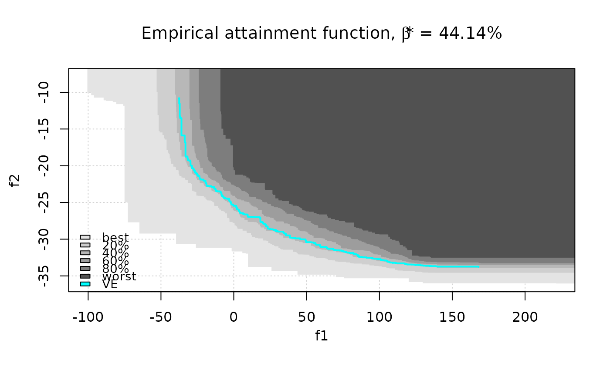
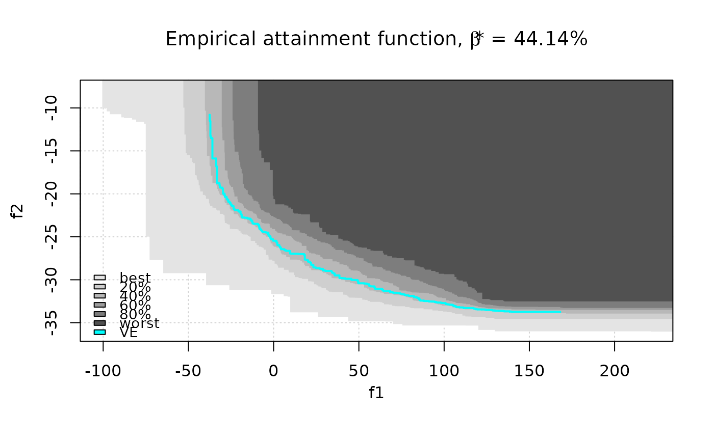
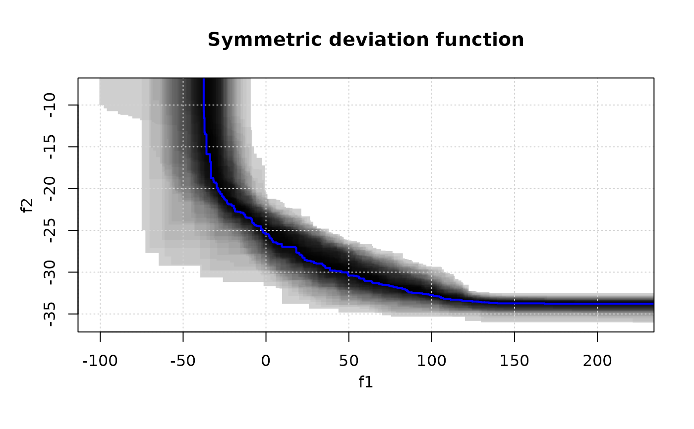
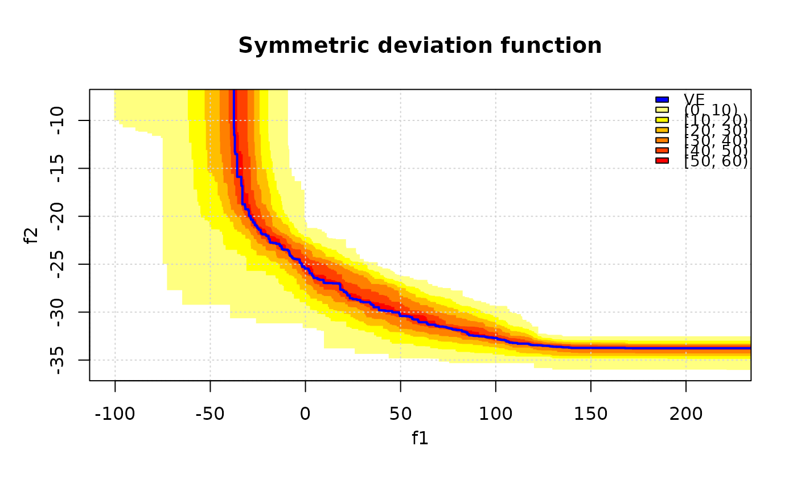
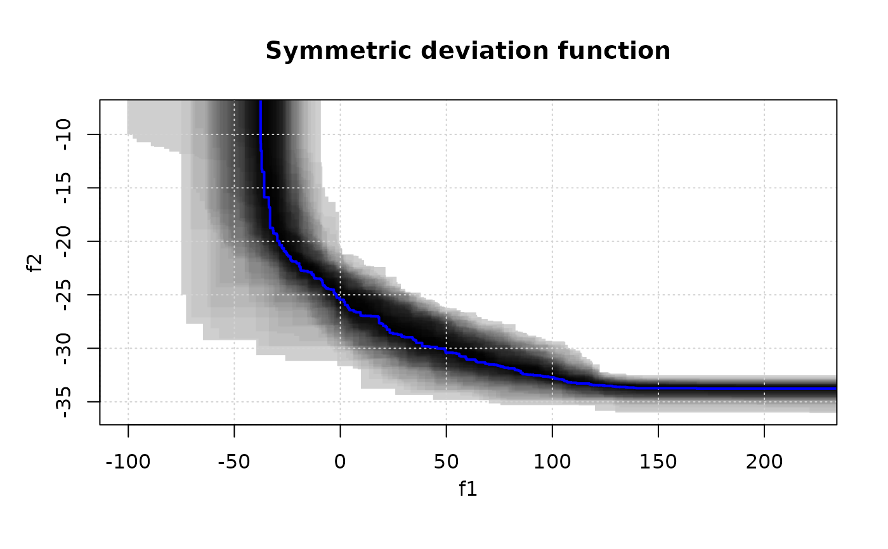
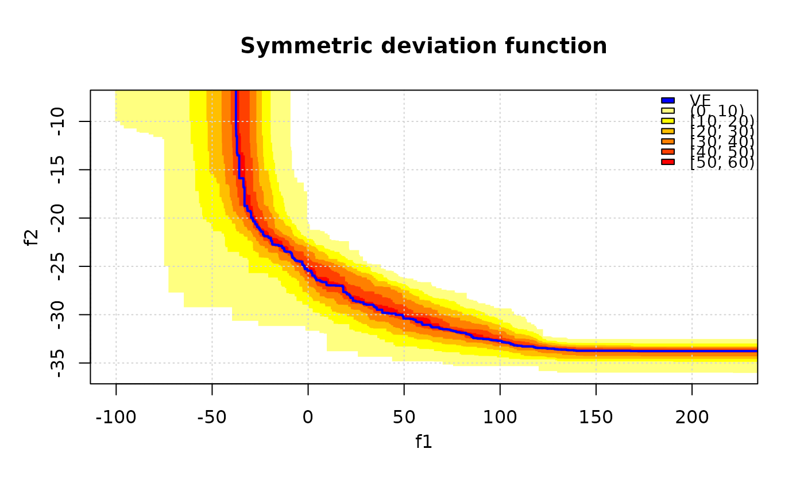

The symmetric deviation function is the probability for a given target in the objective space to belong to the symmetric difference between the Vorob'ev expectation and a realization of the (random) attained set.
Arguments
- x
matrix()|data.frame()
Matrix or data frame of numerical values, where each row gives the coordinates of a point. Ifsetsis missing, the last column ofxgives the sets.- sets
integer()
A vector that indicates the set of each point inx. If missing, the last column ofxis used instead.- ve, threshold
Vorob'ev expectation and threshold, e.g., as returned by
moocore::vorob_t().- nlevels
(
integer(1))
Number of levels in which is divided the range of the symmetric deviation.- ve.col
Plotting parameters for the Vorob'ev expectation.
- xlim, ylim, main
Graphical parameters, see
plot.default().- legend.pos
The position of the legend, see
legend(). A value of"none"hides the legend.- col.fun
Function that creates a vector of
ncolors, seeheat.colors().
References
Mickaël Binois, David Ginsbourger, Olivier Roustant (2015). “Quantifying uncertainty on Pareto fronts with Gaussian process conditional simulations.” European Journal of Operational Research, 243(2), 386–394. doi:10.1016/j.ejor.2014.07.032 .
C. Chevalier (2013), Fast uncertainty reduction strategies relying on Gaussian process models, University of Bern, PhD thesis.
Ilya Molchanov (2005). Theory of Random Sets. Springer.
Examples
data(CPFs, package = "moocore")
res <- moocore::vorob_t(CPFs, reference = c(2, 200))
print(res$threshold)
#> [1] 44.14062
## Display Vorob'ev expectation and attainment function
# First style
eafplot(CPFs[,1:2], sets = CPFs[,3], percentiles = c(0, 25, 50, 75, 100, res$threshold),
main = substitute(paste("Empirical attainment function, ",beta,"* = ", a, "%"),
list(a = formatC(res$threshold, digits = 2, format = "f"))))
 # Second style
eafplot(CPFs[,1:2], sets = CPFs[,3], percentiles = c(0, 20, 40, 60, 80, 100),
col = gray(seq(0.8, 0.1, length.out = 6)^0.5), type = "area",
legend.pos = "bottomleft", extra.points = res$ve, extra.col = "cyan",
extra.legend = "VE", extra.lty = "solid", extra.pch = NA, extra.lwd = 2,
main = substitute(paste("Empirical attainment function, ",beta,"* = ", a, "%"),
list(a = formatC(res$threshold, digits = 2, format = "f"))))

# Vorob'ev deviation
VD <- moocore::vorob_dev(CPFs, reference = c(2, 200), ve = res$ve)
# Display the symmetric deviation function.
symdevplot(CPFs, ve = res$ve, threshold = res$threshold, nlevels = 11)
# Second style
eafplot(CPFs[,1:2], sets = CPFs[,3], percentiles = c(0, 20, 40, 60, 80, 100),
col = gray(seq(0.8, 0.1, length.out = 6)^0.5), type = "area",
legend.pos = "bottomleft", extra.points = res$ve, extra.col = "cyan",
extra.legend = "VE", extra.lty = "solid", extra.pch = NA, extra.lwd = 2,
main = substitute(paste("Empirical attainment function, ",beta,"* = ", a, "%"),
list(a = formatC(res$threshold, digits = 2, format = "f"))))

# Vorob'ev deviation
VD <- moocore::vorob_dev(CPFs, reference = c(2, 200), ve = res$ve)
# Display the symmetric deviation function.
symdevplot(CPFs, ve = res$ve, threshold = res$threshold, nlevels = 11)
 # Levels are adjusted automatically if too large.
symdevplot(CPFs, ve = res$ve, threshold = res$threshold, nlevels = 200, legend.pos = "none")

# Use a different palette.
symdevplot(CPFs, ve = res$ve, threshold = res$threshold, nlevels = 11, col.fun = heat.colors)

# Levels are adjusted automatically if too large.
symdevplot(CPFs, ve = res$ve, threshold = res$threshold, nlevels = 200, legend.pos = "none")

# Use a different palette.
symdevplot(CPFs, ve = res$ve, threshold = res$threshold, nlevels = 11, col.fun = heat.colors)
